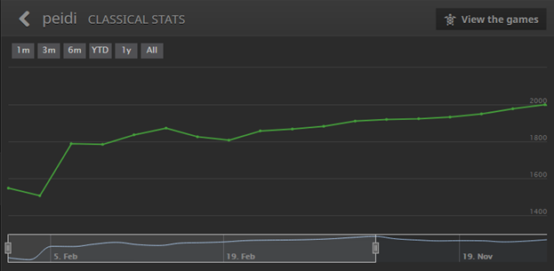
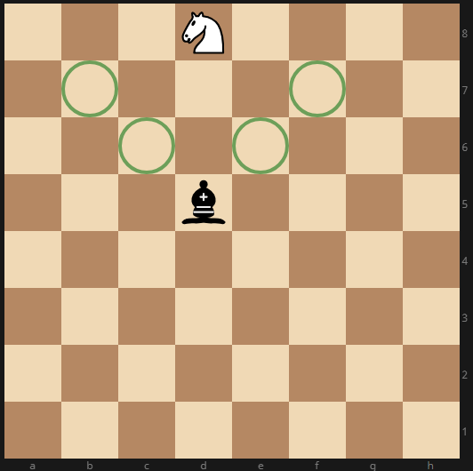
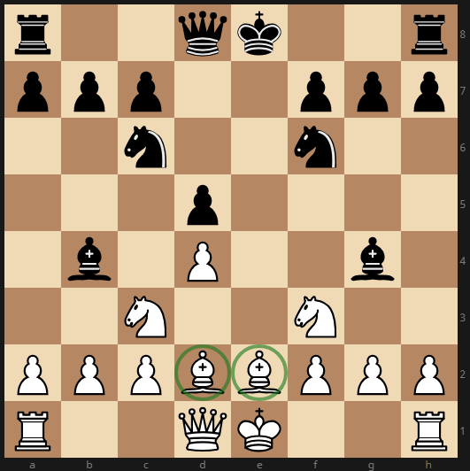

How I Finally Hit 2000 on Lichess, and Improved my Chess Rating by 200 Points in 16 Days
January 2019
Progress graph [1]:

This guide won’t teach you any easy tricks for fast rating jumps. Improving at chess requires immense mental focus. I won many games just because I wanted a win more and thought harder and longer than my opponents – I could tell based on clock usage.
This guide will teach you where to focus your mental energy on. Some questions answered includes:
How frequently should you do chess puzzles?
Which endgame positions do you need to know?
How much should you study openings?
What are some good online tools that can help you improve?
My Chess Background
When I was eight, a relative gifted me a chess set and chess book. I learned the rules together with my dad, although we didn’t read them very carefully because we would en passant to capture any piece that was left or right of a pawn. I still remember my first non-dad opponent’s very weird face when I en passant captured his knight.
When I was nine, I immigrated to America and brought my chess set with me. I didn’t have many possessions, so I pretty much brought everything I owned with me. But the chess set was most memorable. That, and my Popeye shirt, which my grandma hated since Popeye looked deformed, but that made me like it way more.
I continued to play chess pretty casually until college. I really enjoyed the game, but the local competition was lacking. The only serious chess club was one hour away from my house, and the online chess scene wasn’t as developed back then.
During university, I really lived up the bachelor lifestyle and played online chess more seriously. I peaked at an online rating around 1800.
During this time, to try and improve, I studied grandmaster games, read chess books, watched lectures from the Chessmaster series, and took the most common advice of training puzzles to improve my tactics. None of this helped my rating go up much.
Analyzing my own games helped me improve the most, but I still ended up stalling around 1800. The problem is, I could never be sure where my mistakes were without an engine, and back then, they were so cumbersome to use.
I played very sparingly afterwards. It was roughly a ten year hiatus.
But then, Lichess came out with a free online engine that looked super easy to use. I finally had an easy way to correct my mistakes. On February 10th, 2018, I set a goal of playing seriously everyday and hitting a 2000 rating which i achieved on February 26th.
What Won’t Help You Improve Much
1. Puzzles
It’s 100% true that tactics [2] can get you to 2000+ which is like 2200+ online. But puzzles won’t improve your tactics nearly as much as studying mistakes from your own games.
The thing is, both solving puzzles and spotting tactics in game are mostly willpower. You will be better at both if you think harder and longer. It’s not worth training your willpower, at least not compared to learning to apply game concepts.
But does solving puzzles help you learn patterns in tactics which can help you identify tactics more quickly in the future? Let’s look at some data. In 2016, three scientists from Microsoft, Cornell and Harvard scoured 200 million chess games played online between amateurs to find patterns in human mistake making. They found something extremely interesting. The best predictor for blunder rates, translating closely to major tactical errors [3], is not the rating of the player, but the complexity of the board position.
This is a profoundly unexpected result. You make more blunders than Grandmasters less because they recognize tactical patterns faster, but more because you put yourself in precarious positions. Don’t get me wrong, the improved pattern recognition definitely plays a part, just not nearly as much as most people think.
The more I reflect personally on this finding, the more it makes sense. As my Lichess puzzle rating went up, the main difference was how deep I had to think -- I had to think three moves ahead instead of one or two. If I want to get difficult puzzles correct, I don’t rely on any pattern recognition. I just spend a lot of time and mental energy explicitly calculating out every combination of moves. I’m really not learning much, most people can get the same puzzle correct if they just thought as hard as I.
Another problem with puzzles is that you are aware a tactic exists. But in game, it’s difficult to know when a tactic exists in a position, so you won’t know how much time to spend searching for tactics. Only after analyzing many of my own games did I realize that I didn’t spend enough time searching for tactics in the early game.
The same study mentioned earlier had a good answer for how long you should search for tactics. It found that blunder rates, roughly equivalent to missed tactics, flatten out almost completely past ten seconds of thinking time. So you should think for at least ten seconds on every single move (except memorized openings), and anything longer won’t affect blunder rates much further. The study hypothesized that when players deliberate on a move for a long time, they are usually formulating a grand strategy rather than evaluating specific tactics.
2. Studying Endgames
Look through your game history and count what percentage of your games is decided in the end game. Then count the percentage of games decided in the mid game. There is a chess insights tool in Lichess which can help with this.
Personally, I studied the Philidor and Lucena positions in the beginning of my ratings climb and they never came up a single time.
For now, all you need to know about end games are two things:
1. Get your king to the center
2. How to win with king and pawn vs. king
That’s it. Just two things. You don’t need to know endgames involving bishops and knights and rooks. They’ll rarely come up.
One important side note is that when you do occasionally reach the end game with a relatively balanced position, you will need to focus very hard here. End games require a lot of calculations and is prone for mistakes, even at the grandmaster level. In game 6 of the recent 2018 Chess Championship between Carlsen and Caruana, both of the top two players in the world missed a forced mate.
The problem with studying end games is that there are so many different situations that whatever you study is highly unlikely to show up in game. Just capitalize on early and mid game blunders so you won’t have to ever play an end game. Blunders happen all the time even up to 2000 rating.
3. Studying Openings
I played the Orangutan/Polish Opening (1. B4) for the majority of my climb to 2000. The opening sucks but it doesn’t matter [4]. Just pick an opening that you’re somewhat comfortable with and stick with it.
Sticking to a few openings is better than knowing a variety of openings. If you employ a variety of openings, you are more prone to making opening mistakes since there is more to memorize. You won’t learn as much from opening mistakes than positional and tactical mistakes in the mid game.
So what opening should you play? Whatever fits your style. You will find though, that as your rating climbs, gambits will work less effectively.
What Works
1. Try Harder to Win Every Game
Ok, duh, but seriously, I’ve played many different competitive games in my life, and mental focus is more important in chess compared to anything else. This is by far my number one tip.
Don’t play by feel. Never make a move because it seems good, remember the ten second minimum per move rule I mentioned earlier. Focus 100% even during your opponent’s turn and start calculating out your next best move in response to what you predict your opponent’s move will be. Don’t watch a movie on your other monitor. Focus like shinobi. Whenever I find myself not focusing 100%, I stop playing for the day.
You might be surprised how early you have to start focusing. It’s often as early as moves two and three (if straying from openings you know well), you should start thinking about what type of positional game you want to achieve. Tactics will start showing up as early as move five.
Always use up more clock than the opponent early on. If you get an early advantage, you won’t need much clock later to convert a win. Defending well requires much more clock than attacking well. Don’t try to reach the end game with more time on your clock and outmaneuver your opponent then. You’ll end up making mistakes mid game and spend all your time defending.
2. Analyze Your Own Games
If you want to improve, you should be analyzing 100% of your own games. At the minimum, one third of your chess time should be spent on analysis.
Try to figure out why you won or lost without an engine. Figure out what were the key moves you made mistakes on without using an engine first. Then turn on the engine to confirm. They are classified as blunders on Lichess. Next, understand the correct and wrong moves in the position of the blunder without seeing the solution from the engine. And lastly, use the engine to confirm the solution you came up with.
When following the above procedure, never move on to the next step until the prior step is fully completed. For example, before the last step of confirming the solution to a blunder with the engine, you should spend so much time understanding the position that the engine should rarely be teaching you anything new.
You should also categorize your mistakes to find themes of where you frequently fault. Do you frequently miss hanging pawns which can be captured due to pins? Do you miss a lot of forks and skewers that result after a forced exchange? Do you frequently get in specific uncomfortable opening positions where you’re constantly cramped for room and on the defense? Knowing the types of mistakes you frequently make will help you make these mistakes less frequently.
What about studying games from grandmasters? Is that better than or a good complement to studying your own games? Well, grandmasters don’t make many mistakes but you do. Your opponents do too. So it won’t be too helpful since you’re learning from fewer “mistakes”. You won’t know what grandmasters are thinking when watching their games anyways.
Chess books on theory and strategy probably aren’t too helpful either. I say “probably” because I’m not an expert here. I’ve only read one chess book, and it’s the one that taught me the rules when I was nine. But there’s a massive goldmine of more relevant information you can learn from your own games, there’s no need to learn less relevant information from hypothetical positions until much later.
3. Play on Lichess.org
Lichess comes with an engine to help your analysis. I know other websites like chess.com also has an engine, but the Lichess analysis engine is easier to use. They just have a better team of coders and designers. Lichess also has a Chess Insights tool which shows your win percentage by opening among other useful stats.
Game Concepts That Helped me Improve
This next section is a bit personal, and is probably most relevant for players rated 1500-2000. They were more so revelations I picked up while I improved rather than concepts I applied in order to improve.
Good and Bad Bishops
During the early and mid game, central pawns on each side tend to be on the same color squares so they can protect each other. Your “good bishop” is the one opposite the color squares of your pawns. This is because your “good bishop” can attack opposing central pawns and is not blocked in by your own pawns. It’s a good idea to trade your bad bishop for your opponent’s good bishop.
Bishops are Worth More than Knights
There are several key advantages for bishops over knights:
In the late game when there are not many pieces on the board, bishops control more squares and can move around the board faster than knights. This means if you have pawns on both sides of the board (A and H files), they will be easier to promote.
If a knight is at the edge of the board, a bishop can completely trap a knight if placed 3 squares away vertically or horizontally.

In the late game, a bishop and pawn can protect each other while a knight and pawn cannot.
There’s one major advantage of knights over bishops:
If you only have a single bishop, your opponent can place all of their pieces on the opposite color severely diminishing your bishop’s usefulness
Overall, most grandmasters and engines value bishops more. The player with the bishop instead of the knight threatens an advantage in the endgame and forces the opponent to come up with something.
There is some controversy in terms of whether a single bishop is better than a single knight. Many grandmasters say they are equal and the entirety of the bishop value advantage is due to having the bishop pair. Kaufman wrote an excellent article on this based on analysis of almost one million games.
A Protected Pawn on E5 is Crushing, and D5 is Pretty Good Too
A deep protected [5] central pawn chokes your opponent of so much space that over the next five to ten moves, you will progressively mount an overwhelming advantage in development. Lichess evaluations use the Stockfish engine which doesn’t show too much of an advantage in these positions, but newer and stronger neural net based engines like AlphaZero confirms that a large advantage exists [6].
Where To Place Your Bishop, and Other Opening Principles
Having your bishop unpin your knight as seen below is usually better than moving your bishop out further if the knight is already pinned.

An opening guideline is to move out your knights before your bishops. You gain flexibility because your knight usually moves to the third row, while your bishop has more reasonable options.
An extension to the guideline above is that it’s usually a good move to pin your opponent’s knight with your bishop if they already moved the bishop that can unpin their knight. You can take advantage of your opponent’s misplaced bishop.
Fianchetto is good as well. It is well positioned to pressure the center and also protect your king or attack the enemy king.
Notes
[1] After peaking in February, I started taking chess less seriously and my rating dipped back down a bit. As you can see in the chart, I played far fewer games in all of March to November than those sixteen days in February.
[2] In chess, a tactic refers to a sequence of moves that limits the opponent's options and may result in tangible gain. Tactics are usually contrasted with strategy, in which advantages take longer to be realized, and the opponent is less constrained in responding.
[3] Blunders are generally defined by 300 centipawn loss or more. Centipawn is the common measure used to compare which side is winning during a chess game. By definition, 100 centipawns is equivalent to the average value of a starting pawn. The centipawn advantage shifts with every move as positional advantages arise and pieces get captured. Blunders are almost equivalent to tactical mistakes because it’s almost impossible to observe a large centipawn shift without a forced sequence leading to a tangible gain.
[4] It actually does matter, because I looked at my win rates by opening and I won far more as black than white. My point still stands that you don’t need to micro-tweak the opening you use and study deep into all the different opening lines. Just get comfortable with one opening and stick with it, unless you notice major problems.
[5] Protected pawn means protected by another pawn here.
[6] Stockfish and most popular chess engines prior to 2017 use minimax algorithms where each move is evaluated assuming that the opponent responds optimally, or whatever the engine believes is the most optimal. The engine usually only looks a few moves ahead due to the exponential computational expense -- each move has tens of responses then tens more responses and so on, and all the positions have to be evaluated. Due to the limited number of moves the engine evaluates, it plays more materialistically. Furthermore, it assumes perfect defense from the opponent which is not representative of human play. AlphaZero uses MCTS (Monte Carlo Tree Search) where games are evaluated to the conclusion of a win/loss/draw. This is much stronger for positional analysis where advantages can take many moves to pan out. MCTS also has the advantage of not assuming perfect defense from opponents like minimax.